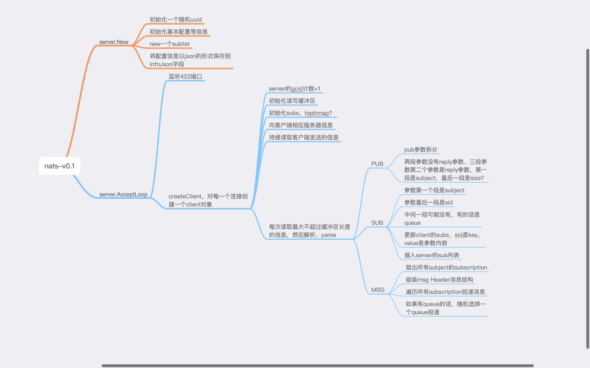

<!DOCTYPE html>
<html lang="zh-Hans">

<head>
  <!-- hexo-inject:begin --><!-- hexo-inject:end --><meta name="generator" content="Hexo 3.8.0">
  <!--[if lt IE 9]>
        <style>body {display: none; background: none !important} </style>
        <meta http-equiv="Refresh" Content="0; url=//outdatedbrowser.com/" />
    <![endif]-->

  <meta charset="utf-8">
  <meta http-equiv="X-UA-Compatible" content="IE=edge, chrome=1">
  <meta name="viewport" content="width=device-width, initial-scale=1, maximum-scale=1, user-scalable=no">
  <meta name="format-detection" content="telephone=no">
  <meta name="author" content="whyming">

  <meta name="description" content="ARTS打卡第二周 A: leetcode 3Sum， Midum R：http断点续传协议TUS T: 利用git commit 回滚代码，阅读庞大项目 S：go-nats代码阅读">
  <meta name="keywords" content="ARTS,golang,打卡,go">
  <meta property="og:type" content="article">
  <meta property="og:title" content="ARTS-第二周">
  <meta property="og:url" content="http://yoursite.com/2019/04/14/ARTS-2/index.html">
  <meta property="og:site_name" content="Whyming&#39;s Blog">
  <meta property="og:description" content="ARTS打卡第二周 A: leetcode 3Sum， Midum R：http断点续传协议TUS T: 利用git commit 回滚代码，阅读庞大项目 S：go-nats代码阅读">
  <meta property="og:locale" content="zh-Hans">
  <meta property="og:image" content="http://yoursite.com/2019/04/14/ARTS-2/image-20190414102359041.png">
  <meta property="og:updated_time" content="2019-04-14T02:30:42.590Z">
  <meta name="twitter:card" content="summary">
  <meta name="twitter:title" content="ARTS-第二周">
  <meta name="twitter:description" content="ARTS打卡第二周 A: leetcode 3Sum， Midum R：http断点续传协议TUS T: 利用git commit 回滚代码，阅读庞大项目 S：go-nats代码阅读">
  <meta name="twitter:image" content="http://yoursite.com/2019/04/14/ARTS-2/image-20190414102359041.png">

  <link rel="apple-touch-icon" href="/apple-touch-icon.png">

  <link rel="alternate" href="/atom.xml" title="Whyming&#39;s Blog" type="application/atom+xml">

  <link rel="shortcut icon" href="/favicon.png">

  <link href="//cdn.bootcss.com/animate.css/3.5.1/animate.min.css" rel="stylesheet">

  <link href="//cdn.bootcss.com/fancybox/2.1.5/jquery.fancybox.min.css" rel="stylesheet">

  <script src="//cdn.bootcss.com/pace/1.0.2/pace.min.js"></script>
  <link href="//cdn.bootcss.com/pace/1.0.2/themes/blue/pace-theme-minimal.css" rel="stylesheet">

  <link rel="stylesheet" href="/css/style.css">

  <link href="//cdn.bootcss.com/font-awesome/4.6.3/css/font-awesome.min.css" rel="stylesheet">

  <title>ARTS-第二周 | Whyming&#39;s Blog</title>

  <script src="//cdn.bootcss.com/jquery/2.2.4/jquery.min.js"></script>
  <script src="//cdn.bootcss.com/clipboard.js/1.5.10/clipboard.min.js"></script>

  <script>
    var yiliaConfig = {
      fancybox: true,
      animate: true,
      isHome: false,
      isPost: true,
      isArchive: false,
      isTag: false,
      isCategory: false,
      fancybox_js: "//cdn.bootcss.com/fancybox/2.1.5/jquery.fancybox.min.js",
      scrollreveal: "//cdn.bootcss.com/scrollReveal.js/3.1.4/scrollreveal.min.js",
      search: false
    }

  </script>

  <script>
    yiliaConfig.jquery_ui = [false];

  </script>

  <script>
    yiliaConfig.rootUrl = "\/";

  </script><!-- hexo-inject:begin --><!-- hexo-inject:end -->

</head>

</html>

<body>
  <!-- hexo-inject:begin --><!-- hexo-inject:end --><div id="container">
    <div class="left-col">
      <div class="overlay"></div>
      <div class="intrude-less">
        <header id="header" class="inner">
          <a href="/" class="profilepic">
            
          </a>
          <hgroup>
            <h1 class="header-author">
              <a href="/">whyming</a>
            </h1>
          </hgroup>

          <p class="header-subtitle">坚持 积累 总结 升级</p>

          <div id="switch-btn" class="switch-btn">
            <div class="icon">
              <div class="icon-ctn">
                <div class="icon-wrap icon-house" data-idx="0">
                  <div class="birdhouse"></div>
                  <div class="birdhouse_holes"></div>
                </div>
                <div class="icon-wrap icon-ribbon hide" data-idx="1">
                  <div class="ribbon"></div>
                </div>

                <div class="icon-wrap icon-link hide" data-idx="2">
                  <div class="loopback_l"></div>
                  <div class="loopback_r"></div>
                </div>

                <div class="icon-wrap icon-me hide" data-idx="3">
                  <div class="user"></div>
                  <div class="shoulder"></div>
                </div>

              </div>

            </div>
            <div class="tips-box hide">
              <div class="tips-arrow"></div>
              <ul class="tips-inner">
                <li>菜单</li>
                <li>标签</li>

                <li>友情链接</li>

                <li>关于我</li>

              </ul>
            </div>
          </div>

          <div id="switch-area" class="switch-area">
            <div class="switch-wrap">
              <section class="switch-part switch-part1">
                <nav class="header-menu">
                  <ul>

                    <li>
                      <a href="/">主页</a>
                    </li>

                    <li>
                      <a href="/archives/">所有文章</a>
                    </li>

                    <li>
                      <a href="/tags/">标签云</a>
                    </li>

                    <li>
                      <a href="/about/">关于我</a>
                    </li>

                  </ul>
                </nav>
                <nav class="header-nav">
                  <ul class="social">

                    <a class="fa Email" href="mailto:whyming@163.com" title="Email"></a>

                    <a class="fa GitHub" href="https://github.com/whyming" title="GitHub"></a>

                  </ul>
                </nav>
              </section>

              <section class="switch-part switch-part2">
                <div class="widget tagcloud" id="js-tagcloud">
                  <ul class="tag-list">
                    <li class="tag-list-item">
                      <a class="tag-list-link" href="/tags/ARTS/">ARTS</a>
                    </li>
                    <li class="tag-list-item">
                      <a class="tag-list-link" href="/tags/Nsq/">Nsq</a>
                    </li>
                    <li class="tag-list-item">
                      <a class="tag-list-link" href="/tags/go/">go</a>
                    </li>
                    <li class="tag-list-item">
                      <a class="tag-list-link" href="/tags/golang/">golang</a>
                    </li>
                    <li class="tag-list-item">
                      <a class="tag-list-link" href="/tags/二叉树/">二叉树</a>
                    </li>
                    <li class="tag-list-item">
                      <a class="tag-list-link" href="/tags/平衡二叉树/">平衡二叉树</a>
                    </li>
                    <li class="tag-list-item">
                      <a class="tag-list-link" href="/tags/打卡/">打卡</a>
                    </li>
                    <li class="tag-list-item">
                      <a class="tag-list-link" href="/tags/日常/">日常</a>
                    </li>
                    <li class="tag-list-item">
                      <a class="tag-list-link" href="/tags/源码学习/">源码学习</a>
                    </li>
                    <li class="tag-list-item">
                      <a class="tag-list-link" href="/tags/源码阅读/">源码阅读</a>
                    </li>
                    <li class="tag-list-item">
                      <a class="tag-list-link" href="/tags/算法/">算法</a>
                    </li>
                    <li class="tag-list-item">
                      <a class="tag-list-link" href="/tags/记录/">记录</a>
                    </li>
                  </ul>
                </div>
              </section>

              <section class="switch-part switch-part3">
                <div id="js-friends">

                  <a class="main-nav-link switch-friends-link" href="https://hexo.io">Hexo</a>

                  <a class="main-nav-link switch-friends-link" href="https://pages.github.com/">GitHub</a>

                  <a class="main-nav-link switch-friends-link" href="http://moxfive.xyz/">MOxFIVE</a>

                </div>
              </section>

              <section class="switch-part switch-part4">

                <div id="js-aboutme">专注于前端</div>
              </section>

            </div>
          </div>
        </header>
      </div>

    </div>
    <div class="mid-col">
      <nav id="mobile-nav">
        <div class="overlay">
          <div class="slider-trigger"></div>
          <h1 class="header-author js-mobile-header hide">
            <a href="/" title="回到主页">whyming</a>
          </h1>
        </div>
        <div class="intrude-less">
          <header id="header" class="inner">
            <a href="/" class="profilepic">
              
            </a>
            <hgroup>
              <h1 class="header-author">
                <a href="/" title="回到主页">whyming</a>
              </h1>
            </hgroup>

            <p class="header-subtitle">坚持 积累 总结 升级</p>

            <nav class="header-menu">
              <ul>

                <li>
                  <a href="/">主页</a>
                </li>

                <li>
                  <a href="/archives/">所有文章</a>
                </li>

                <li>
                  <a href="/tags/">标签云</a>
                </li>

                <li>
                  <a href="/about/">关于我</a>
                </li>

                <div class="clearfix"></div>
              </ul>
            </nav>
            <nav class="header-nav">
              <ul class="social">

                <a class="fa Email" target="_blank" href="mailto:whyming@163.com" title="Email"></a>

                <a class="fa GitHub" target="_blank" href="https://github.com/whyming" title="GitHub"></a>

              </ul>
            </nav>
          </header>
        </div>
        <link class="menu-list" tags="标签" friends="友情链接" about="关于我">
      </nav>

      <div class="body-wrap">
        <article id="post-ARTS-2" class="article article-type-post" itemscope="" itemprop="blogPost">

          <div class="article-meta">
            <a href="/2019/04/14/ARTS-2/" class="article-date">
              <time datetime="2019-04-14T01:27:30.000Z" itemprop="datePublished">2019-04-14</time>
            </a>

          </div>

          <div class="article-inner">

            <input type="hidden" class="isFancy">

            <header class="article-header">
              <h1 class="article-title" itemprop="name">
                ARTS-第二周
              </h1>

            </header>

            <div class="article-info article-info-post">

              <div class="article-tag tagcloud">
                <ul class="article-tag-list">
                  <li class="article-tag-list-item">
                    <a class="article-tag-list-link" href="/tags/ARTS/">ARTS</a>
                  </li>
                  <li class="article-tag-list-item">
                    <a class="article-tag-list-link" href="/tags/go/">go</a>
                  </li>
                  <li class="article-tag-list-item">
                    <a class="article-tag-list-link" href="/tags/golang/">golang</a>
                  </li>
                  <li class="article-tag-list-item">
                    <a class="article-tag-list-link" href="/tags/打卡/">打卡</a>
                  </li>
                </ul>
              </div>

              <div class="clearfix"></div>
            </div>

            <div class="article-entry" itemprop="articleBody">

              <p>ARTS打卡第二周</p>
              <p>A: leetcode 3Sum， Midum</p>
              <p>R：http断点续传协议TUS</p>
              <p>T: 利用git commit 回滚代码，阅读庞大项目</p>
              <p>S：go-nats代码阅读</p>
              <a id="more"></a>
              <p>[TOC]</p>
              <h3 id="A-leetcode-3Sum，-Midum">
                <a href="#A-leetcode-3Sum，-Midum" class="headerlink" title="A: leetcode 3Sum， Midum"></a>A: leetcode 3Sum， Midum</h3>
              <p>实际做了3道题，不过
                <code>intToRoman</code>和
                <code>romanToInt</code>这两题难度较低，意义不大，于是尝试这道
                <code>3sum</code>
              </p>
              <p>自己的实现：</p>
              <details>
                <br>
                <summary>自己的实现</summary>
                <br>
                <br>
                <figure class="highlight go">
                  <table>
                    <tr>
                      <td class="gutter">
                        <pre><span class="line">1</span><br><span class="line">2</span><br><span class="line">3</span><br><span class="line">4</span><br><span class="line">5</span><br><span class="line">6</span><br><span class="line">7</span><br><span class="line">8</span><br><span class="line">9</span><br><span class="line">10</span><br><span class="line">11</span><br><span class="line">12</span><br><span class="line">13</span><br><span class="line">14</span><br><span class="line">15</span><br><span class="line">16</span><br><span class="line">17</span><br><span class="line">18</span><br><span class="line">19</span><br><span class="line">20</span><br><span class="line">21</span><br><span class="line">22</span><br><span class="line">23</span><br><span class="line">24</span><br><span class="line">25</span><br><span class="line">26</span><br><span class="line">27</span><br><span class="line">28</span><br><span class="line">29</span><br><span class="line">30</span><br><span class="line">31</span><br><span class="line">32</span><br><span class="line">33</span><br><span class="line">34</span><br><span class="line">35</span><br><span class="line">36</span><br><span class="line">37</span><br><span class="line">38</span><br><span class="line">39</span><br><span class="line">40</span><br><span class="line">41</span><br><span class="line">42</span><br></pre>
                      </td>
                      <td class="code">
                        <pre><span class="line">  </span><br><span class="line"><span class="function"><span class="keyword">func</span> <span class="title">threeSum</span><span class="params">(nums []<span class="keyword">int</span>)</span> [][]<span class="title">int</span></span> &#123;</span><br><span class="line">	<span class="keyword">if</span> <span class="built_in">len</span>(nums) == <span class="number">0</span> &#123;</span><br><span class="line">		<span class="keyword">return</span> [][]<span class="keyword">int</span>&#123;&#125;</span><br><span class="line">	&#125;</span><br><span class="line">	sort.Slice(nums, <span class="function"><span class="keyword">func</span><span class="params">(i, j <span class="keyword">int</span>)</span> <span class="title">bool</span></span> &#123;</span><br><span class="line">		<span class="keyword">return</span> nums[j] &gt; nums[i]</span><br><span class="line">	&#125;)</span><br><span class="line">	positiveMap := <span class="keyword">map</span>[<span class="keyword">int</span>]<span class="keyword">int</span>&#123;&#125;</span><br><span class="line">	<span class="keyword">for</span> index, i := <span class="keyword">range</span> nums &#123;</span><br><span class="line">		<span class="keyword">if</span> i &gt;= <span class="number">0</span> &#123;</span><br><span class="line">			positiveMap[i] = index</span><br><span class="line">		&#125;</span><br><span class="line">	&#125;</span><br><span class="line">	result := [][]<span class="keyword">int</span>&#123;&#125;</span><br><span class="line">	currA := nums[<span class="number">0</span>] - <span class="number">1</span></span><br><span class="line">	<span class="keyword">for</span> i := <span class="number">0</span>; i &lt; <span class="built_in">len</span>(nums)<span class="number">-1</span>; i++ &#123;</span><br><span class="line">		<span class="keyword">if</span> nums[i] &gt; <span class="number">0</span> &#123;</span><br><span class="line">			<span class="keyword">break</span></span><br><span class="line">		&#125;</span><br><span class="line">		<span class="keyword">if</span> currA == nums[i] &#123;</span><br><span class="line">			<span class="keyword">continue</span></span><br><span class="line">		&#125;</span><br><span class="line">		currA = nums[i]</span><br><span class="line">		currB := nums[<span class="number">0</span>] - <span class="number">1</span></span><br><span class="line">		<span class="keyword">for</span> j := i + <span class="number">1</span>; j &lt; <span class="built_in">len</span>(nums); j++ &#123;</span><br><span class="line">			<span class="keyword">if</span> currB == nums[j] &#123;</span><br><span class="line">				<span class="keyword">continue</span></span><br><span class="line">			&#125;</span><br><span class="line">			currB = nums[j]</span><br><span class="line">			target := <span class="number">0</span> - (nums[i] + nums[j])</span><br><span class="line">			<span class="keyword">if</span> c, ok := positiveMap[target]; ok &#123;</span><br><span class="line">				<span class="keyword">if</span> c &gt; j &#123;</span><br><span class="line">					result = <span class="built_in">append</span>(result, []<span class="keyword">int</span>&#123;</span><br><span class="line">						nums[i], nums[j], target,</span><br><span class="line">					&#125;)</span><br><span class="line">				&#125;</span><br><span class="line">			&#125;</span><br><span class="line">		&#125;</span><br><span class="line">	&#125;</span><br><span class="line">	<span class="keyword">return</span> result</span><br><span class="line">&#125;</span><br></pre>
                      </td>
                    </tr>
                  </table>
                </figure>
                <br>
                <br>
              </details>

              <p> 运行结果：</p>
              <blockquote>
                <p>Runtime: 936 ms, faster than 48.61% of Go online submissions for
                  3Sum.</p>
                <p>Memory Usage: 340.6 MB, less than 30.93% of Go online submissions
                  for 3Sum.</p>
              </blockquote>
              <p>参考大神代码后的结果：</p>
              <figure class="highlight go">
                <table>
                  <tr>
                    <td class="gutter">
                      <pre><span class="line">1</span><br><span class="line">2</span><br><span class="line">3</span><br><span class="line">4</span><br><span class="line">5</span><br><span class="line">6</span><br><span class="line">7</span><br><span class="line">8</span><br><span class="line">9</span><br><span class="line">10</span><br><span class="line">11</span><br><span class="line">12</span><br><span class="line">13</span><br><span class="line">14</span><br><span class="line">15</span><br><span class="line">16</span><br><span class="line">17</span><br><span class="line">18</span><br><span class="line">19</span><br><span class="line">20</span><br><span class="line">21</span><br><span class="line">22</span><br><span class="line">23</span><br><span class="line">24</span><br><span class="line">25</span><br><span class="line">26</span><br><span class="line">27</span><br><span class="line">28</span><br><span class="line">29</span><br><span class="line">30</span><br><span class="line">31</span><br><span class="line">32</span><br><span class="line">33</span><br><span class="line">34</span><br><span class="line">35</span><br></pre>
                    </td>
                    <td class="code">
                      <pre><span class="line"><span class="function"><span class="keyword">func</span> <span class="title">threeSum</span><span class="params">(nums []<span class="keyword">int</span>)</span> [][]<span class="title">int</span></span> &#123;</span><br><span class="line">	result := [][]<span class="keyword">int</span>&#123;&#125;</span><br><span class="line">	sort.Slice(nums, <span class="function"><span class="keyword">func</span><span class="params">(i, j <span class="keyword">int</span>)</span> <span class="title">bool</span></span> &#123;</span><br><span class="line">		<span class="keyword">return</span> nums[i] &lt; nums[j]</span><br><span class="line">	&#125;)</span><br><span class="line">	<span class="keyword">for</span> i := <span class="number">0</span>; i &lt; <span class="built_in">len</span>(nums)<span class="number">-2</span> &amp;&amp; nums[i] &lt;= <span class="number">0</span>; i++ &#123;</span><br><span class="line">		<span class="keyword">if</span> i &gt; <span class="number">0</span> &amp;&amp; nums[i] == nums[i<span class="number">-1</span>] &#123; <span class="comment">// 重复的跳过</span></span><br><span class="line">			<span class="keyword">continue</span></span><br><span class="line">		&#125;</span><br><span class="line">		<span class="comment">// s指向数组开头即最小值，e指向最后，即最大值</span></span><br><span class="line">		s, e, target := i+<span class="number">1</span>, <span class="built_in">len</span>(nums)<span class="number">-1</span>, <span class="number">0</span>-nums[i]</span><br><span class="line">		<span class="keyword">for</span> s &lt; e &#123;</span><br><span class="line">			<span class="comment">// fmt.Printf("nums %+v\n s: %d, e:%d\n", nums, s, e)</span></span><br><span class="line">			<span class="keyword">if</span> nums[s]+nums[e] == target &#123;</span><br><span class="line">				result = <span class="built_in">append</span>(result, []<span class="keyword">int</span>&#123;</span><br><span class="line">					nums[i], nums[s], nums[e],</span><br><span class="line">				&#125;)</span><br><span class="line">				<span class="keyword">for</span> s &lt; e &amp;&amp; nums[s] == nums[s+<span class="number">1</span>] &#123;</span><br><span class="line">					s++</span><br><span class="line">				&#125;</span><br><span class="line">				<span class="keyword">for</span> s &lt; e &amp;&amp; nums[e] == nums[e<span class="number">-1</span>] &#123;</span><br><span class="line">					e--</span><br><span class="line">				&#125;</span><br><span class="line">				s++</span><br><span class="line">				e--</span><br><span class="line">			&#125; <span class="keyword">else</span> <span class="keyword">if</span> nums[s]+nums[e] &gt; target &#123; <span class="comment">// 结果大于逾期，需要最大值减小</span></span><br><span class="line">				e--</span><br><span class="line">			&#125; <span class="keyword">else</span> &#123;</span><br><span class="line">				s++</span><br><span class="line">			&#125;</span><br><span class="line">		&#125;</span><br><span class="line"></span><br><span class="line">	&#125;</span><br><span class="line">	<span class="keyword">return</span> result</span><br><span class="line">&#125;</span><br></pre>
                    </td>
                  </tr>
                </table>
              </figure>
              <p>运行结果：</p>
              <blockquote>
                <p>Runtime: 868 ms, faster than 91.25% of Go online submissions for
                  3Sum.</p>
                <p>Memory Usage: 205.1 MB, less than 98.97% of Go online submissions
                  for 3Sum.</p>
              </blockquote>
              <h3 id="R：http断点续传协议TUS">
                <a href="#R：http断点续传协议TUS" class="headerlink" title="R：http断点续传协议TUS"></a>R：http断点续传协议TUS</h3>
              <p>
                <a href="https://golangbot.com/understanding-tus/" target="_blank" rel="noopener">Resumable file uploader: Understanding tus protocol</a>
              </p>
              <p>通过http方式解决大文件断点续传问题，主要通过三个步骤实现：</p>
              <ul>
                <li>http
                  <code>POST</code>方法,创建文件，返回rest格式的文件地址</li>
                <li>http
                  <code>PATCH</code>方案更新文件，每次传入更新的
                  <code>Upload-Offset</code>和
                  <code>Content-Length</code>,</li>
                <li>http
                  <code>HEAD</code>返回文件更新位置，即最后一次
                  <code>PATCH</code>的位置</li>
              </ul>
              <h3 id="T-利用git-commit-回滚代码，阅读庞大项目">
                <a href="#T-利用git-commit-回滚代码，阅读庞大项目" class="headerlink" title="T: 利用git commit 回滚代码，阅读庞大项目"></a>T: 利用git commit 回滚代码，阅读庞大项目</h3>
              <p>这个技巧来自于公众号一个大神的推荐，
                <a href="https://mp.weixin.qq.com/s/LsGEr_RJYfAbGBBlRxJH-Q" target="_blank" rel="noopener">开源代码学习技巧</a>
              </p>
              <p>内容主要就是clone整个项目后，可以通过提交历史找到一个较早的可用提交，个人经验可以看tag名称，比如v0.01，v0.24,这种，或是看具体的commit
                message，这样可以看到最小功能的项目代码，理解最初意图，主要是降低阅读代价，然后不断向后移动提交位置，不仅可以逐步阅读完代码，还可以看到作者在每次更新的主要内容。
              </p>
              <h3 id="S：go-nats代码阅读">
                <a href="#S：go-nats代码阅读" class="headerlink" title="S：go-nats代码阅读"></a>S：go-nats代码阅读</h3>
              <p>用上面提到的技巧，自己整理了一下第一版go-nats代码，很快就看懂了，接下来会阅读
                <code>v0.6</code>，这样逐步完成整个项目阅读</p>
              <p>
                
              </p>

            </div>

          </div>

          <nav id="article-nav">

            <div id="article-nav-older" class="article-nav-title">
              <a href="/2019/04/01/ARTS-第一周/">
                ARTS 第一周
              </a>
            </div>

          </nav>

        </article>
        <div id="toc" class="toc-article">
          <strong class="toc-title">文章目录</strong>

          <ol class="toc">
            <li class="toc-item toc-level-3">
              <a class="toc-link" href="#A-leetcode-3Sum，-Midum">
                <span class="toc-number">1.</span>
                <span class="toc-text">
                  A: leetcode 3Sum， Midum</span>
              </a>
            </li>
            <li class="toc-item toc-level-3">
              <a class="toc-link" href="#R：http断点续传协议TUS">
                <span class="toc-number">2.</span>
                <span class="toc-text">
                  R：http断点续传协议TUS</span>
              </a>
            </li>
            <li class="toc-item toc-level-3">
              <a class="toc-link" href="#T-利用git-commit-回滚代码，阅读庞大项目">
                <span class="toc-number">3.</span>
                <span class="toc-text">
                  T: 利用git commit 回滚代码，阅读庞大项目</span>
              </a>
            </li>
            <li class="toc-item toc-level-3">
              <a class="toc-link" href="#S：go-nats代码阅读">
                <span class="toc-number">4.</span>
                <span class="toc-text">
                  S：go-nats代码阅读</span>
              </a>
            </li>
          </ol>

        </div>
        <style>
          .left-col .switch-btn,
          .left-col .switch-area {
            display: none;
          }

          .toc-level-3 i,
          .toc-level-3 ol {
            display: none !important;
          }

        </style>

        <input type="button" id="tocButton" value="隐藏目录" title="点击按钮隐藏或者显示文章目录">

        <script>
          yiliaConfig.toc = ["隐藏目录", "显示目录", !!"false"];

        </script>

        <div class="share">

        </div>

        <div class="scroll" id="post-nav-button">

          <a href="/" title="回到主页">
            <i class="fa fa-home"></i>
          </a>

          <a title="文章列表">
            <i class="fa fa-bars"></i>
            <i class="fa fa-times"></i>
          </a>

          <a href="/2019/04/01/ARTS-第一周/" title="下一篇: ARTS 第一周">
            <i class="fa fa-angle-right"></i>
          </a>

        </div>

        <ul class="post-list">
          <li class="post-list-item">
            <a class="post-list-link" href="/2019/04/14/ARTS-2/">ARTS-第二周</a>
          </li>
          <li class="post-list-item">
            <a class="post-list-link" href="/2019/04/01/ARTS-第一周/">ARTS 第一周</a>
          </li>
          <li class="post-list-item">
            <a class="post-list-link" href="/2019/03/18/Nsq源码学习笔记-二-nsqd消息订阅/">Nsq源码学习笔记(二) --- nsqd消息订阅</a>
          </li>
          <li class="post-list-item">
            <a class="post-list-link" href="/2018/07/23/算法200题训练02-平衡二叉树/">算法200题训练02-平衡二叉树</a>
          </li>
          <li class="post-list-item">
            <a class="post-list-link" href="/2018/07/11/Go的反射库reflect学习/">Go的反射库reflect学习</a>
          </li>
          <li class="post-list-item">
            <a class="post-list-link" href="/2018/07/04/go知识点收集/">go知识点收集</a>
          </li>
          <li class="post-list-item">
            <a class="post-list-link" href="/2018/07/02/算法200题训练（一）最长递增子序列优化/">算法200题训练（一）最长递增子序列优化</a>
          </li>
          <li class="post-list-item">
            <a class="post-list-link" href="/2018/06/27/算法200题训练（一）最长递增子序列/">算法200题训练（一）最长递增子序列</a>
          </li>
          <li class="post-list-item">
            <a class="post-list-link" href="/2018/06/27/算法200题训练/">算法200题训练</a>
          </li>
          <li class="post-list-item">
            <a class="post-list-link" href="/2018/06/08/Nsq源码学习笔记（一）----nsqd启动/">Nsq源码学习笔记（一）----nsqd启动</a>
          </li>
          <li class="post-list-item">
            <a class="post-list-link" href="/2018/06/08/奇怪的问题记录/">奇怪的问题记录</a>
          </li>
          <li class="post-list-item">
            <a class="post-list-link" href="/2018/06/01/Mac下使用dokcer搭建开发环境记录/">Mac下使用dokcer搭建开发环境记录</a>
          </li>
          <li class="post-list-item">
            <a class="post-list-link" href="/2018/05/30/笔记博客开坑/">笔记博客开坑</a>
          </li>
        </ul>

        <script>


        </script>
      </div>
      <footer id="footer">
        <div class="outer">
          <div id="footer-info">
            <div class="footer-left">
              <i class="fa fa-copyright"></i>
              2016-2019 whyming
            </div>
            <div class="footer-right">
              <a href="http://hexo.io/" target="_blank" title="快速、简洁且高效的博客框架">Hexo</a> Theme
              <a href="https://github.com/MOxFIVE/hexo-theme-yelee" target="_blank" title="简而不减 Hexo 双栏博客主题  v3.5">Yelee</a> by MOxFIVE
              <i class="fa fa-heart animated infinite pulse"></i>
            </div>
          </div>

          <div class="visit">

            <span id="busuanzi_container_site_pv" style="display:none">
              <span id="site-visit" title="本站到访数">
                <i class="fa fa-user" aria-hidden="true"></i>
                <span id="busuanzi_value_site_uv"></span>
              </span>
            </span>

            <span>| </span>

            <span id="busuanzi_container_page_pv" style="display:none">
              <span id="page-visit" title="本页阅读量">
                <i class="fa fa-eye animated infinite pulse" aria-hidden="true"></i>
                <span id="busuanzi_value_page_pv"></span>
              </span>
            </span>

          </div>

        </div>
      </footer>

    </div>
    <script data-main="/js/main.js" src="//cdn.bootcss.com/require.js/2.2.0/require.min.js">


    </script>

    <script type="text/x-mathjax-config">
      MathJax.Hub.Config({ tex2jax: { inlineMath: [ ['$','$'], ["\\(","\\)"] ], processEscapes:
      true, skipTags: ['script', 'noscript', 'style', 'textarea', 'pre', 'code']
      } }); MathJax.Hub.Queue(function() { var all = MathJax.Hub.getAllJax(), i;
      for(i=0; i
      < all.length; i +=1 ) { all[i].SourceElement().parentNode.className +=' has-jax'
                                                                                      ; } }); </script>

        <script src="//cdn.bootcss.com/mathjax/2.6.1/MathJax.js?config=TeX-AMS-MML_HTMLorMML">


        </script>

        <div class="scroll" id="scroll">
          <a href="#" title="返回顶部">
            <i class="fa fa-arrow-up"></i>
          </a>
          <a href="#comments" onclick="load$hide();" title="查看评论">
            <i class="fa fa-comments-o"></i>
          </a>
          <a href="#footer" title="转到底部">
            <i class="fa fa-arrow-down"></i>
          </a>
        </div>

        <script>
          // Open in New Window
          var oOpenInNew = {
            title: "a.article-title, .article-more-link a",
            tags: ".article-tag a",
            archives: ".archive-article-title",
            miniArchives: "a.post-list-link",
            friends: "#js-friends a",
            socail: ".social a"
          }
          for (var x in oOpenInNew) {
            $(oOpenInNew[x]).attr("target", "_blank");
          }

        </script>

        <script async src="https://dn-lbstatics.qbox.me/busuanzi/2.3/busuanzi.pure.mini.js">


        </script>

  </div><!-- hexo-inject:begin --><!-- hexo-inject:end -->
</body>

</html>
